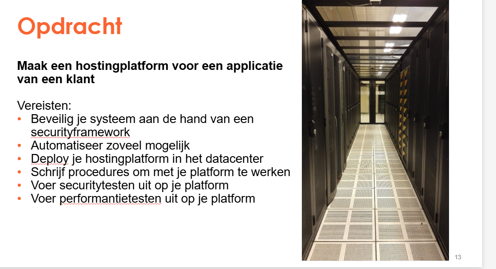

Context
The goal was to build a hosting environment for a client application. The platform had to be secure, reliable and documented clearly so it could be used in a professional way.
Project 02 · Hosting Platform
The assignment was to create a hosting platform for a client application, with focus on security, automation, deployment, procedures and testing.

The goal was to build a hosting environment for a client application. The platform had to be secure, reliable and documented clearly so it could be used in a professional way.
This project helped me understand how hosting environments are built and managed. I also learned why automation, testing and security procedures are important in real IT environments.
Security thinking, documentation, automation, deployment, testing and teamwork.